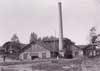
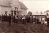

Min skolväg
från Böle till Rabo
av Nils Forsberg
I augusti år 1932 var det dags att börja skolan på Rabo. Jag hade ganska
lång skolväg, drygt 2 km i alla fall, och det första året var det väl mest
till fots, vintertid blev det skidor gent över åkrarna.
Jag kan inte erinra mig när jag fick min första cykel. Jag hade sällskap av
mina grannar, Birger och Ingemar Stålberg, men det var först när jag kommit
upp i klasserna som vi fick samma tider.
Jag minns som igår när mamma följde mig den dagen jag skulle ”skrivas in”.
I början på Wij-berget bodde då den pensionerade lärarinnan, ”fröken Måhlen”,
hon kom ut till grinden och sa ”jaså är det så dags nu, ja all vår början bliver
svår” – jag hade ganska lätt för mig och minns idag min skoltid som något
angenämt - .
På Wij-berget bodde nästan bara Kopparforsanställda på den tiden, de jag
minns var Arvid Norman, Karlsson, Norgren, Fillman, Bernhard Wallin, Åbergs,
skogvaktare T.W Hellman, byggmästare Johan Lindström hans bror Erik
Lindström. I Lilla Herrgården huserade intendenten Hansson. Dr Wikner bodde
i det stora vita huset norr om Trädgårdens Hus (fd Bruksmässen).
Dr Wikners son Gert hade varit i Kanada och kört hundspann, något han
praktiserade när han var hemma vid. Han blev rikskändis som Vaxholmsgubben,
ett väderorakel en tid. Herrgårdens trädgård förestods av Solström
vars dotter Majvor blev min skolkamrat.
Röda längan i Stallbacken fanns mejeriet där Erika Lundin var mejerska.
Stallar och vedbod fylldes årligen med väldiga mängder ved som kapades
och klövs för tjänstebostäderna skulle ju ha ved.
Vår skolväg och tiden för tjänstemännens tid att börja på kontoret på Wij
var lika så vi möttes nästa varje morgon på vägen mellan kontoret och
Valsverksbron.
Några namn jag minns: John Lindqvist, Henry Grundström, Roland Alvin,
Svensson, Sven Wingård, Rylander, Norringe, Holmström, Nilsson.
|
om idogt arbete och plikttrohet mot sin arbetsgivare. På norra sidan om vägen fanns Kopparfors stora byggnad som kallades "Förrådet" med allehanda ting för bostäder och byggnationer. Ansvaret för "Förrådet" hade Edvin Berglund. |
 |
Min skola var den s.k. Privatskolan och min lärarinna de två första åren var
Aina Strimbold.
| För
att komma till stigen som genom björkbacken (Hästbacken) ledde till skolan måste vi passera Kråkbanan, där Wij station låg med Ejnar Lönn somstationsföreståndare och såg till att de många virkestågen kom iväg på rätta tider. Ibland kom den lustiga vagn som kallades ”Majoren” förbi. |
Vi gick två klasser i Privatskolan och hade stor och fin skolgård.
Här fanns den plan som Ockelbo IF använde som fotbollsplan innan den nuvarande byggdes.
Alldeles i närheten låg hembygdsgården där hembygdsfester hölls varje
sommar. Denna gårds samlingar och fester flyttades efter år 1941 till
Pålsgården.
 |
På
hemväg från skolan dristade mig att via den brygga, finns fortfarande
kvar,
gick in och såg det sjudande liv som verksamheten verkligen var.
Hur arbetarna i sina långa vita skjortor (som skydd mot hettan) fraktade
de röda göten (järnstycken) på traverser fram till valsarna som sedan
formade dem till de format som ämnat var.
Så
här efteråt förstår jag att över detta svävade Catharina Bröms
(Nådiga Frun på Wij)
ande och intentioner om framskridande och välstånd.
Upprinnelsen
till denna min berättelse är att jag nämnde för Kjell Söderström
i
samband med nationaldagen 2003 att jag sett Valsverket i produktion.